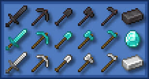
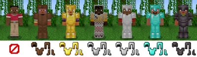
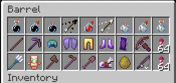
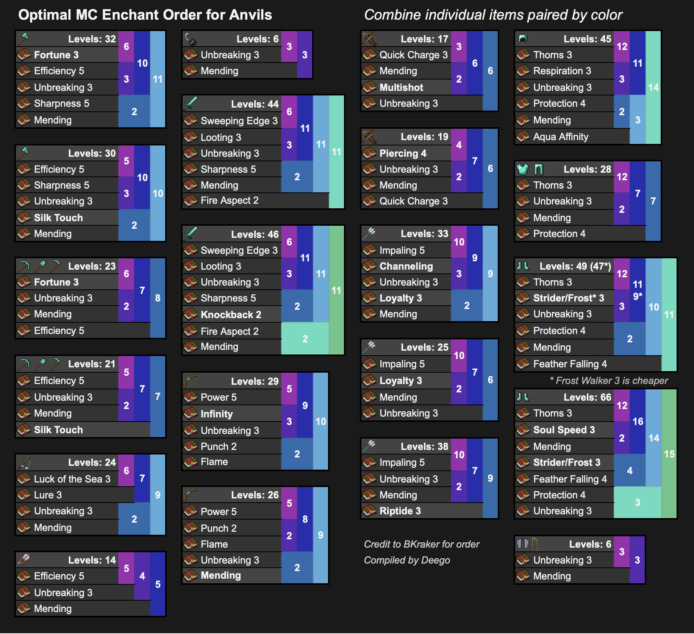

Introduzione agli Oggetti
Gli oggetti in Minecraft sono strumenti, armi, utensili e materiali che ti aiutano nella tua avventura e costruzione.
Strumenti
- Piccone: Utilizzato per estrarre minerali e blocchi duri.
- Ascia: Serve per tagliare legno più velocemente.
- pala: Utile per scavare terra, sabbia e ghiaia.
- Spada: Usata per il combattimento corpo a corpo contro mob e altri giocatori.


Armature
- Elmo, corazza, gambali, stivali: Proteggono da danni e attacchi nemici.
- Materiali: Cuoio, ferro, oro, diamante e netherite con livelli crescenti di protezione.
- Incantesimi: Possono migliorare la resistenza e abilità delle armature.
Oggetti Utili
- Torcia: Illumina zone buie e previene la comparsa di mob ostili.
- Corda (Fune): Aiuta a scalare o scendere in sicurezza.
- Secchio: Permette di trasportare acqua, lava o latte.
- Bussole e orologi: Aiutano nell’orientamento nel mondo di gioco.


Incantesimi e Pozioni
Gli incantesimi migliorano armi, armature e strumenti, mentre le pozioni forniscono effetti temporanei come guarigione, forza o invisibilità.
- Incantesimi comuni: Efficienza, Fortuna, Protezione, Affilatezza.
- Pozioni: Rigenerazione, Velocità, Resistenza al fuoco.